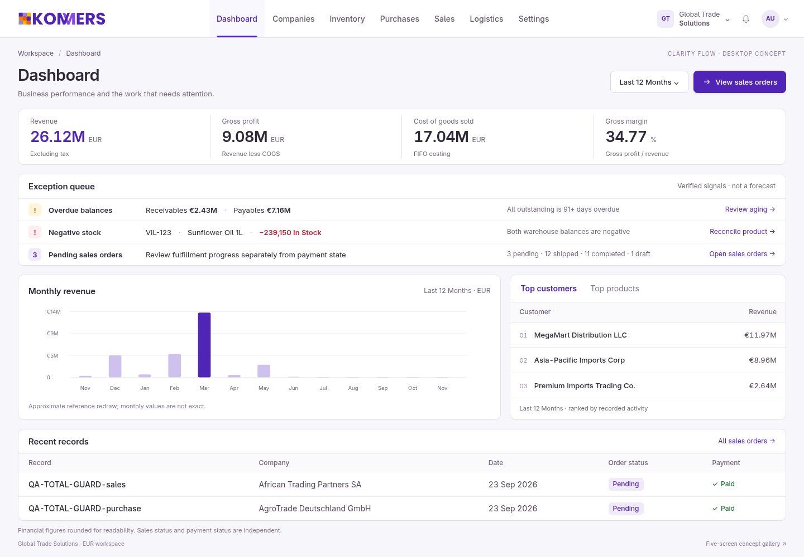
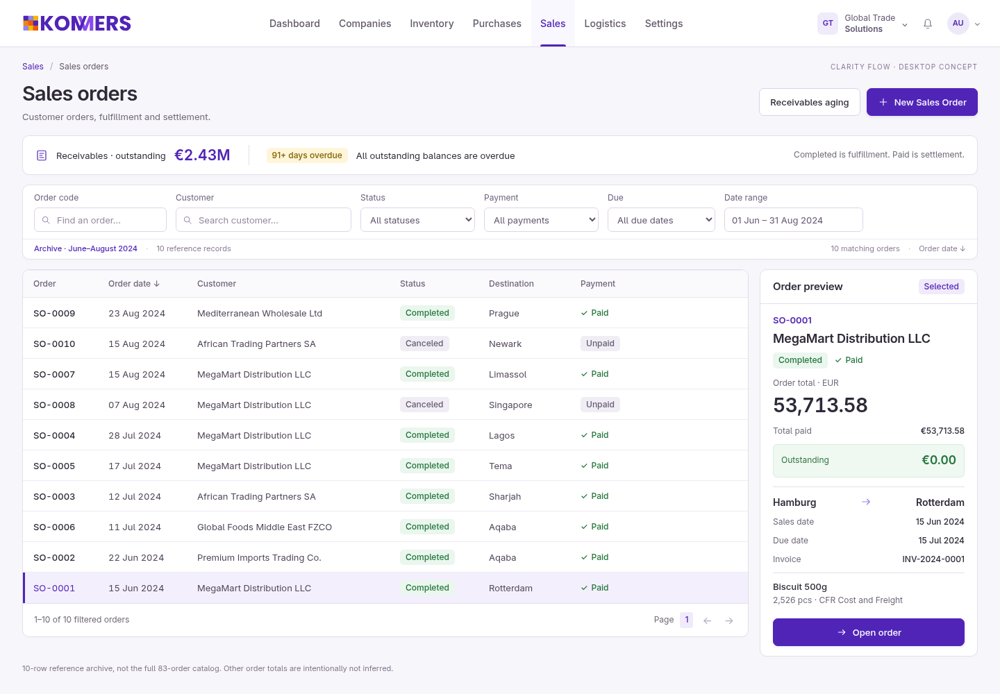
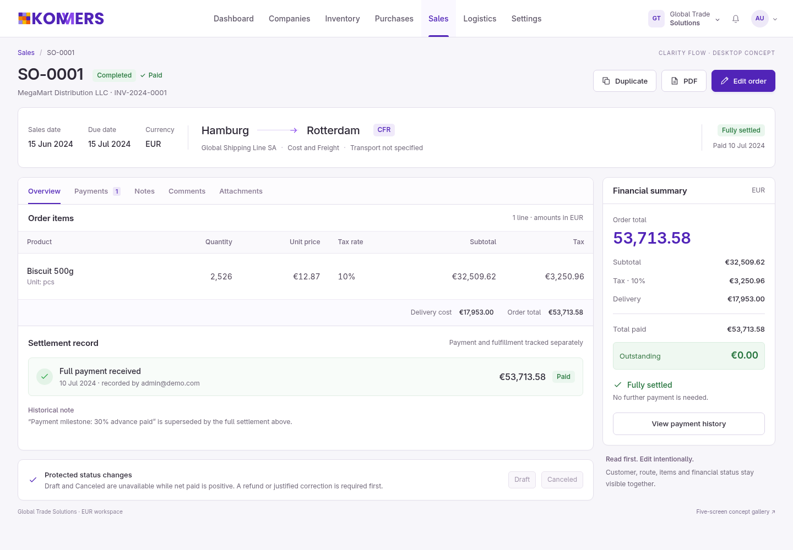
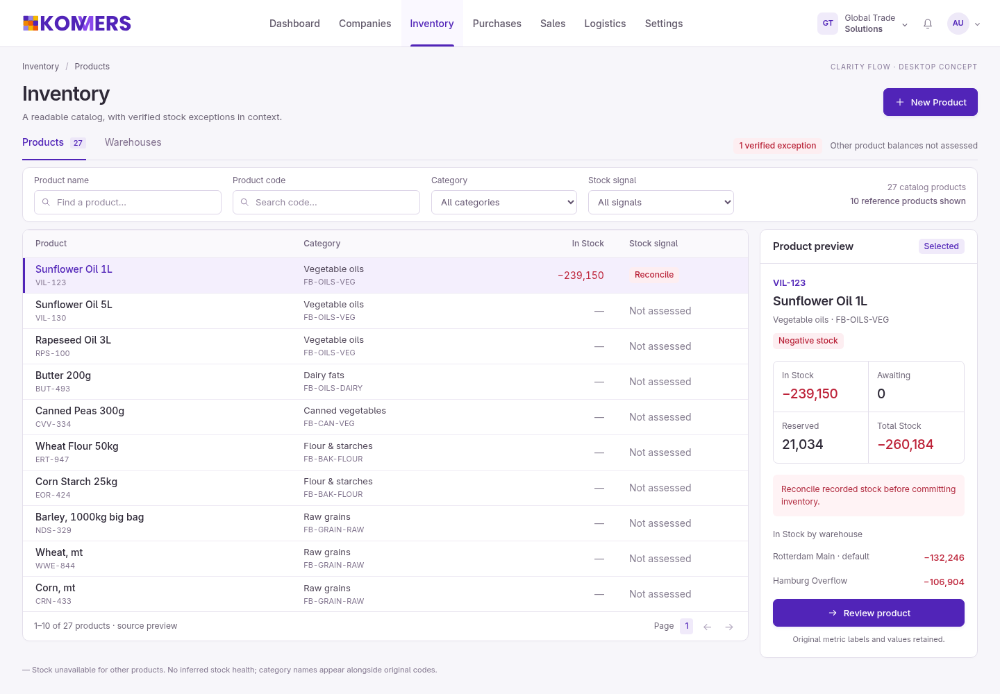
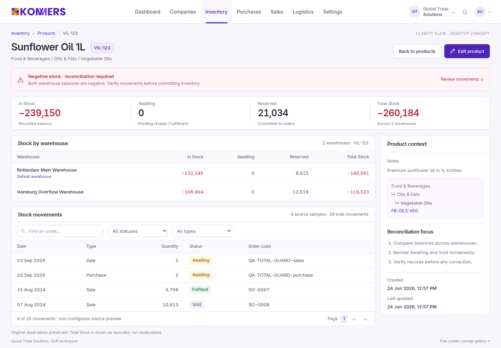

Work moves across, not down.
- A 68px single-row global bar, with page tools in the content.
- Readable full-width CRM tables and contextual right-side inspectors.
- Exceptions first; shallow entity context keeps items and movements visible.
Exact Kommers primary #5124b8 · original unchanged logo · no external assets.
Concept images, not application functionality.
·